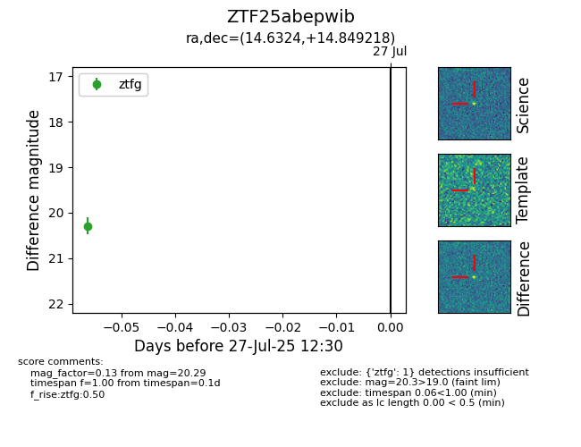

Target ZTF25abepwib at 2025-07-27 12:30, see:
FINK: fink-portal.org/ZTF25abepwib
Lasair: lasair-ztf.lsst.ac.uk/objects/ZTF25abepwib
ALeRCE: alerce.online/object/ZTF25abepwib
alt names
ZTF25abepwib (ztf,fink)
coordinates:
equatorial (ra, dec) = (14.6324,+14.84922)
galactic (l, b) = (125.4928,-47.98727)
photometry
last ztfg=20.29
1 ztfg detections
